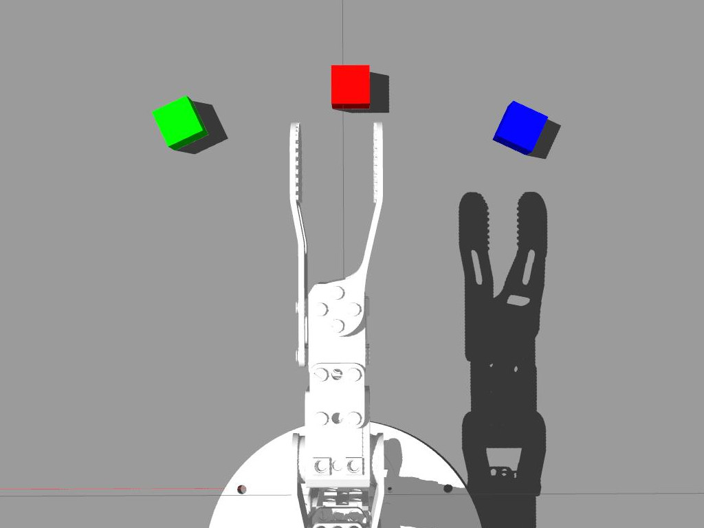
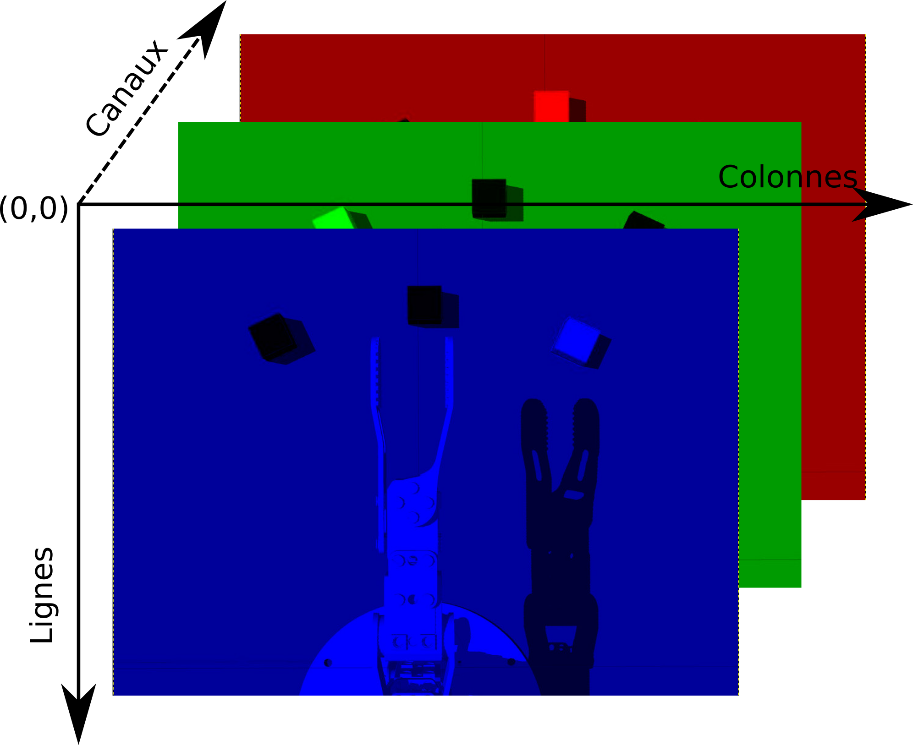
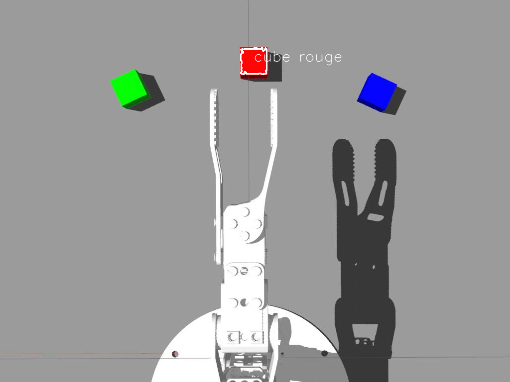

IV. Perception avec OpenCV
Le domaine de "Computer Vision" (CV, ou vision par ordinateur) est une branche de l'intelligence artificielle, qui traite des techniques permettant d'extraire des informations de "haut niveau" utiles à partir d'images. Donc ce domaine développé depuis les années 60, on retrouve généralement des techniques provenant des mathématiques, du traitement d'images, des neurosciences, de l'apprentissage artificiel… Nous allons ici effleurer ce domaine en nous familiarisant avec OpenCV.
Introduction à OpenCV
OpenCV est une bibliothèque logicielle qui est devenue le "standard" du domaine. Cette bibliothèque fournit un énorme ensemble de fonctionnalités et d'algorithmes à la pointe de l'état de l'art. Entre autres sont disponibles:
- Des mécanismes d'entrées/sorties des images et flux vidéos (caméras, fichiers…)
- Des mécanismes de traitement d'images (gestion des formats, couleurs, déformations… )
- Des milliers d'algorithmes développés par la communauté et les industriels (reconnaissance d'image, suivi d'objet, vision 3D, apprentissage…)
Ouverture d'une image
- Téléchargez l'image: 
Créez un fichier
couleurs.pyimport numpy as np import cv2 as cv img = cv.imread('ergo_cubes.jpg')Quelle information nous donne
print(img.shape)?
On peut accéder à chaque pixel par indexation du tableau
imgavecimg[LIGNE, COLONNE](ce qui est très inefficace), que représente la valeurs données parimg[170,255]?- Pour accéder au différents canaux de couleur on peut de même utiliser:
img[:,:,CANAL]avecCANALla couleur voulue. On peut facilement créer des régions d'intérêt (ROI) en utilisant les mécanismes disponibles dans python:
roi=img[140:225, 210:310]OpenCV offre également quelques fonctionnalités pratiques d'interface utilisateur (GUI). Pour afficher une image:
cv.imshow("Mon image", roi) #on donne un nom unique à chaque fenêtre cv.waitKey(0) #permet d'attendre à a l'infiniEnfin, on peut écrire les images dans des fichiers:
cv.imwrite("roi.png", roi)Affichez les trois canaux de couleur dans des fenêtres différentes
Seuil sur la couleur
Nous avons vu que les images sont généralement représentés dans l'espace BGR, ce qui est cohérent avec le fonctionnement du pixel de l'écran (et du capteur), mais moins évidant lorsque l'on souhaite travailler sur les couleurs. Comment par exemple définir le volume 3D dans l'espace BGR représentant le "rose"? C'est pourquoi pour traiter la couleur, il est recommandé de convertir l'encodage de l'image dans un autre espace. L'espace le plus couramment utilisé est le HSV (Hue, Saturation, Value ou Teinte, Saturation, Valeur).
Pour convertir une image de BGR vers HSV il suffit d'utiliser:
img_HSV = cv.cvtColor(img, cv.COLOR_BGR2HSV)On notera que l'espace HSV est encodé avec H dans [0, 179], S dans [0,255] et V dans [0,255]
On peut ensuite appliquer un seuil avec:
img_seuil = cv.inRange(img_HSV, (MIN_H, MIN_S, MIN_V), (MAX_H, MAX_S, MAX_V))Le résultat de la fonction de seuil
inRangeest une image binaireExpérimentez avec les valeurs de seuil pour ne faire apparaître que le cube rouge Note: il est facile de créer des "trackbars" pour changer en temps réel les valeurs, voir le tutoriel
Détection des cubes
Nous sommes maintenant capable de sélectionner des pixels en fonction de leur couleur, il nous faut encore "regrouper" ces informations afin de détecter et reconnaître les cubes.
Une méthode simple consiste à considérer que les pixels d'une couleur choisie font partie d'un "blob" (une région de pixels voisins) représentant le même objet. Dans l'image binaire résultat du seuil, il nous suffit de chercher le
contourdes zones blanches. Pour cela nous allons utiliser la fonctionfindContours()(voir le tutoriel)imgret, contours, hierarchy = cv.findContours( img_seuil, cv.RETR_EXTERNAL, cv.CHAIN_APPROX_SIMPLE)imgretest la même image queimg_seuilcontoursest une liste contenant tous les contours trouvéshierarchycontient les informations sur la hiérarchie des contours (les contours à l'intérieur des contours)Sur une image "naturelle" (avec du bruit) les contours trouvés seront rarement parfaits. Il est possible de "filtrer" ces contours en ne considérant par exemple que ceux dons la surface est cohérente avec les objets recherchés (voir le tutoriel)
- Parcourez la liste des contours et dessinez les contours dont la surface est comprise entre 2500 et 3500 On utilisera une boucle sur
contours, la fonctioncontourArea()retournant la surface d'un contour, ainsi que la fonction de dessindrawContours()(dessinez sur l'image d'origine) Une fois le contour du cube trouvé, nous pouvons chercher son centre avec la fonction
moments()avec une fonction telle que:def trouver_centroid(cnt): M = cv.moments(cnt) if M['m00'] > 0.0: cx = int(M['m10']/M['m00']) cy = int(M['m01']/M['m00']) return (x, y) else: return (0, 0)Nous pouvons ensuite utiliser la position obtenue pour écrire un texte:
cv.putText(img, 'cube', (x, y), cv.FONT_HERSHEY_SIMPLEX, 1,(255, 255, 255), 1, cv.LINE_AA)

- Maintenant que nous sommes capable de détecter un cube d'une couleur, étendez le programme pour détecter la présence et la position des 3 cubes
Intégration avec ROS
Nous allons maintenant intégrer cette détection de cube coloré à ROS en lisant l'image de la caméra de Ergo Jr simulée par Gazebo.
- On peut visualiser les images avec l'outil
rqt_image_view:rosrun rqt_image_view rqt_image_viewLes images brutes sont publiées sur le topic:/ergo_jr/camera_ergo/image_raw - Attrapez chacun des cubes et récupérez des images de la caméra qui vous servirons à vérifier le bon fonctionnement de votre programme précédant
Dans votre package ROS créez le fichier
ros4pro/src/vision.py```python
import rospy from sensor_msgs.msg import Image from std_srvs.srv import Trigger, TriggerResponse from cv_bridge import CvBridge import cv2 as cv import numpy as np
class NodeVision(object):
def __init__(self):
# Params
self.image = None
self.debug_img = None
self.br = CvBridge() #pour la conversion entre les imags OpenCV et les images ROS
# Node cycle rate (in Hz).
self.loop_rate = rospy.Rate(10)
# Pour publier des images pour le debuggage
self.img_pub = rospy.Publisher(
'/ergo_jr/camera_ergo/debug_img', Image, queue_size=1)
# Pour récupérer les images du robot simulé
rospy.Subscriber(
'/ergo_jr/camera_ergo/image_raw', Image, self.callback)
# Créaction d'un service (on utilise le srv standard Trigger)
self.service_vision = rospy.Service(
'/ergo_jr/cube_detection', Trigger, self.handle_cube)
def trouver_cube(self,img):
raise NotImplementedError("Complétez la partie 2.4 avant d'exécuter")
# ICI le traitement OpenCV
# retour du résultat
resp = TriggerResponse()
# Si pas de cube
# resp.success = False
# Sinon
# resp.success = True
# resp.message="COULEUR"
return resp
def handle_cube(self, req):
#Méthode callback qui sera éxécutée à chaque appel du service
# retour du résultat
resp = TriggerResponse()
resp.success = False
# uniquement si l'image existe
if self.image is not None:
imgtmp = self.image.copy()
# on appelle la méthode de traitement d'image
resp = self.trouver_cube(imgtmp)
return resp
def callback(self, msg):
#méthode callback qui sera éxécutée à chaque reception d'un message
self.image = self.br.imgmsg_to_cv2(msg, "bgr8") #On converti l'image ROS en une image OpenCV
def start(self):
rospy.loginfo("Démarage du node vision")
while not rospy.is_shutdown():
if self.image is not None:
# éventuellement, publication d'une image de débug, ici une copie de l'image d'origine
self.debug_img = self.image.copy()
self.img_pub.publish(
self.br.cv2_to_imgmsg(self.debug_img, "bgr8")) #On converti l'image OpenCV en une image ROS
self.loop_rate.sleep()
if __name__ == '__main__':
rospy.init_node("Vision")
vision = NodeVision()
vision.start()
```
- À partir de ce squelette, intégrez votre programme de détection des cubes colorés On notera qu'il est nécessaire d'utiliser CvBridge() afin de faire le lien entre les images OpenCV et les images ROS. On peut appeler le service créé avec la commande:
rosservice call /ergo_jr/cube_detection [TAB] - Dans votre programme de mouvement, utilisez l'appel à ce service afin de détecter la couleur du cube attrapé et faites une pile de cube Rouge/Vert/Bleu Modifiez les couleurs dans le fichier launch
spawn_cubes.launchpour tester différentes combinaisons
📚 Auteurs
Jessica Colombel (Inria), Rémi Fabre (CATIE), Jean-Baptiste Horel (CATIE), Yoan Mollard (Bordeaux INP), Alexandre Péré (Inria), Steve N'Guyen (LaBRI) .
💬 Besoin d'aide ?
Posez votre question sur le forum francophone des utilisateurs de ROS.
📅 Dernière mise à jour : 2021-01-03T19:14:24+01:00